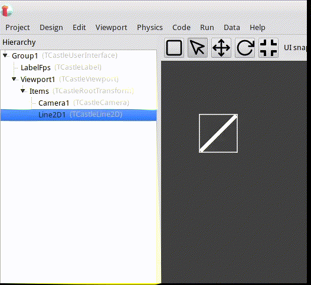
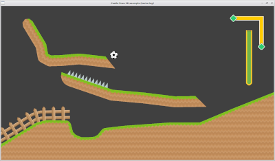
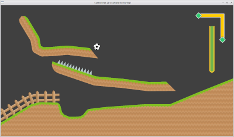

Introduction
Castle Lines 2D is a set of two components for Castle Game Engine.Castle Lines 2D makes it possible to create geometry from polygons directly in the CGE editor.
Castle Lines 2D consists of classes inherited from TCastleAbstractPrimitive:
TCastleLine2D - polyline.
TCastlePolygon2D - potentially non-convex polygon.
To enter the editing mode, use the drop-down menus in the object hierarchy window
Left mouse button - add a point, move a point.
Right mouse button - delete a point.
Middle mouse button - open a window for editing a point.

Detailed usage instructions:
- Get CastleLine2D code.
-
Point your project to
TCastleLine2Dsources. E.g. add this toCastleEngineManifest.xml:<compiler_options> <search_paths> <path value="code/" /> <path value="../../../CastleLines2D/src/" /> </search_paths> </compiler_options> -
Add to
CastleEngineManifest.xmlthe lineeditor_units="CastleLine2D,CastlePolygon2D". See CastleEngineManifest.xml docs for examples. Open your project in CGE editor and use “Project -> Restart Editor (With Custom Components)”
In Lazarus don't forget to add the source path to “Project Options -> Compiler Options -> Paths -> Other unit files”
Be sure to also add
CastleLine2D, CastlePolygon2Dto some uses clause, to register components at runtime.
Examples
For examples, see /CastleLines2D/examples


 

Change log
12.01.2023:
Added various ways to apply texture to TCastleLine2D, TCastlePolygon2D.
The Shift key now helps to draw straight lines.
In CastlePolygon2D added property TCastlePolygon2D.Area
Bugs fixed.
More details
TCastleLine2D
An object of type TIndexedTriangleSetNode is now used as geometry
Changed type CastleLine2D.TBeginEndMode
Added type CastleLine2D.TLineTexCoordMode
Added type CastleLine2D.TJoinTexCoordMode
Added property TCastleLine2D.TexCoordMode
Added property TCastleLine2D.JoinTexCoordMode
To the section protected added
Variables TCastleLine2D.FTexY, TCastleLine2D.FTexX
Method TCastleLine2D.AddGeometryBeginEnd
Method TCastleLine2D.SetTexCoordMode
TCastlePolygon2D
An object of type TIndexedTriangleSetNode is now used as geometry
Added type CastlePolygon2D.TPolygonTexCoordMode
Added property TCastlePolygon2D.Area
Added property TCastlePolygon2D.TextureScale
Added property TCastlePolygon2D.TexCoordMode
Added method TCastlePolygon2D.CalculateAreaWithoutDisplay
TCastleLine2DBase.SelfIntersections moved to TCastleLine2DBase
CastleLine2DMath
Added CastleLine2DMath.AddBox
Added CastleLine2DMath.AddTriangleTop
Added CastleLine2DMath.AddRoundBoxTop
CastleLine2DMath.DoGoodTriangle is now a function
CastleLine2DMath.AddArcBetweenPoints is now a function
CastleLine2DMath.AddCrossSegments is now a function
CastleLine2DMath.AddRect - the order of traversing the rectangle has been changed
Generated by PasDoc 0.16.0.